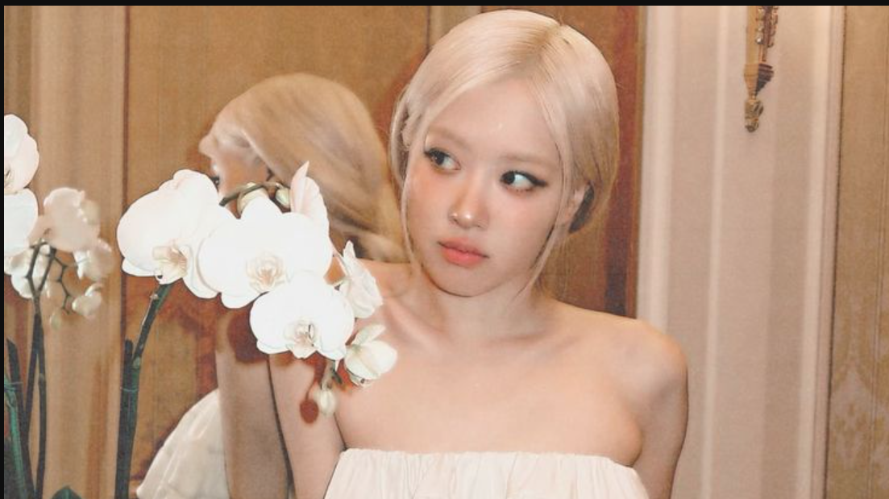
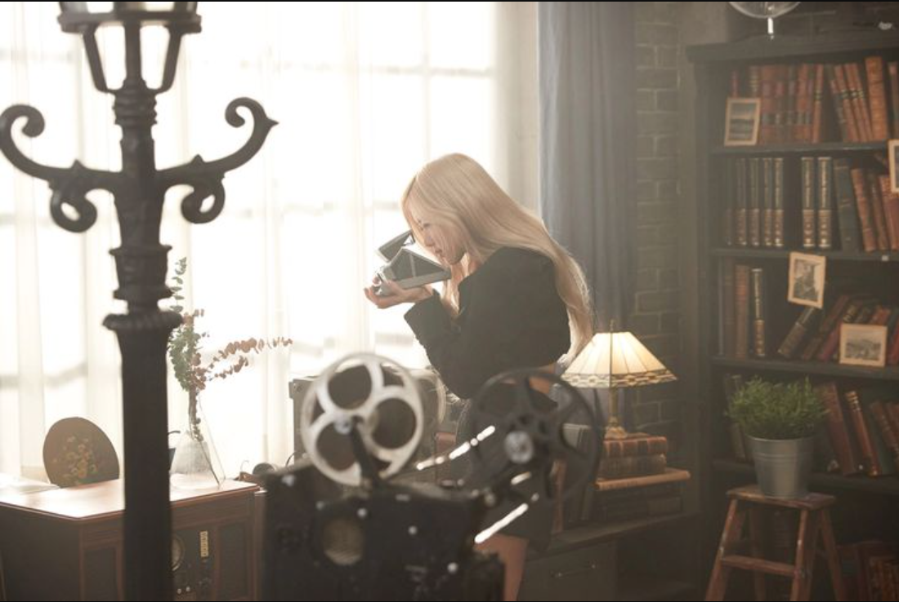
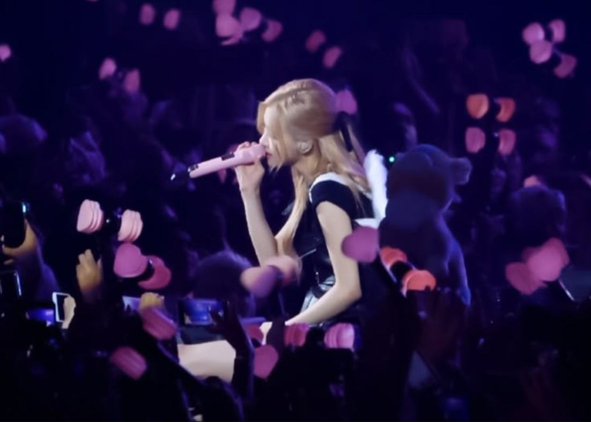

Biografi
Nama lengkap: Roseanne Park / Park Chae-young (박채영)
Nama panggung: ROSÉ
Tanggal lahir: 11 Februari 1997
Asal: Auckland, Selandia Baru — dibesarkan di Australia
Rosé adalah vokalis utama dan pemain gitar di BLACKPINK. Suaranya yang khas dan emosional membuatnya dikenal luas. Pada tahun 2021, dia debut solo dengan lagu "On The Ground" dan "Gone".
Fakta Menarik
- Rosé fasih berbahasa Korea dan Inggris.
- Dia belajar memainkan gitar dan piano sejak kecil.
- Memiliki suara yang sangat unik dan mudah dikenali.
- Rosé adalah duta merek global untuk Tiffany & Co dan YSL.
Perjalanan Karier
-
Rosé mengikuti audisi YG di Australia pada 2012 dan berhasil lolos, menempati peringkat pertama dari ratusan peserta. Ia kemudian pindah ke Korea Selatan untuk menjalani masa trainee selama 4 tahun.
Debut bersama BLACKPINK pada 2016 membawa namanya dikenal luas karena suara unik dan emosionalnya.
Pada 12 Maret 2021, Rosé debut solo dengan single album R, berisi lagu On The Ground dan Gone. Lagu tersebut sukses besar di seluruh dunia dan memecahkan rekor video musik debut solo wanita Korea dengan views terbanyak dalam 24 jam (41,6 juta views).
Fakta Menarik
- Global Ambassador untuk Yves Saint Laurent (YSL) dan Tiffany & Co.
- Memenangkan penghargaan Best Solo Artist (Female) di Golden Disc Awards 2022.
- Memegang rekor Guinness World Records untuk Most viewed YouTube video in 24 hours by a solo K-pop artist.
Galeri



Media Sosial
📷 Instagram: @roses_are_rosie
🎬 YouTube: ROSÉ Official